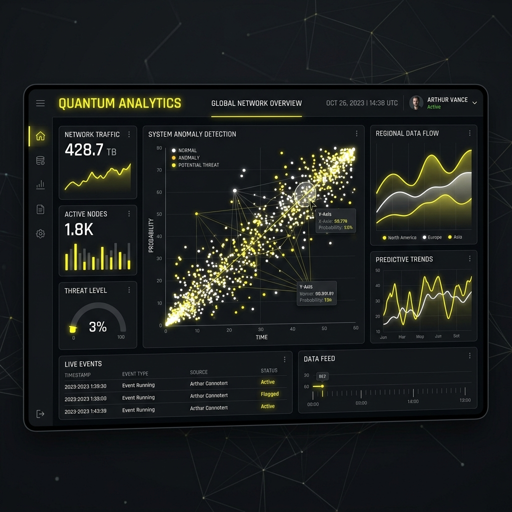
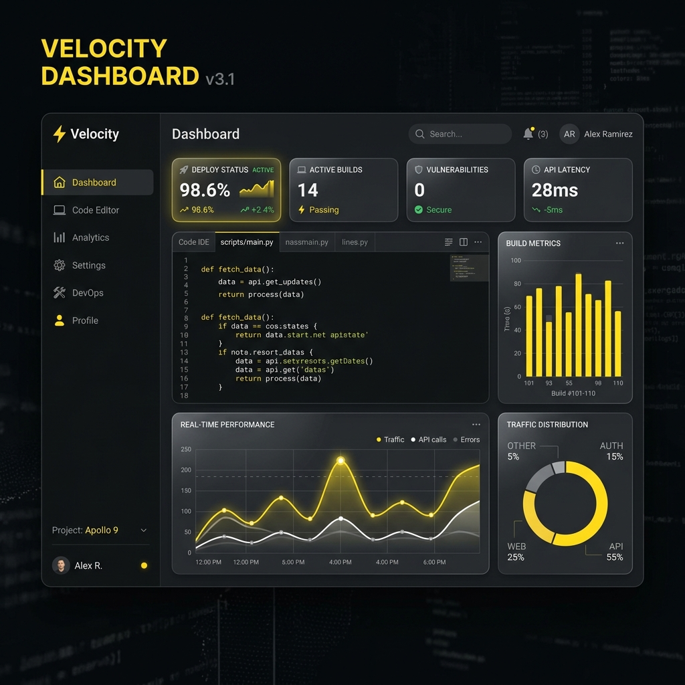

Hi, I'm Maruti
Ghorpade
I am a dual-discipline specialist bridging the gap between elegant, fast web applications and deep statistical data modeling. I design robust user interfaces and translate complex datasets into highly actionable visual business intelligence.
Bridging Code Architecture and Statistical Insights
With formal expertise in both software engineering and analytical workflows, I create websites that aren't just visually spectacular, but are also designed around high-performance metrics. As a Web Developer, I build lightning-fast, accessible interfaces. As a Data Analyst, I ensure those sites and related ecosystems utilize secure, structural database designs to measure user interactions accurately.
Dynamic Web Infrastructure
Developing responsive layouts and state-driven systems with HTML5, CSS3, JavaScript, and advanced JS frameworks.
Quantitative Analytics
Creating robust relational database schemas, running complex SQL queries, and utilizing statistical tools to build reports.
Live Performance & Analytical Dashboard
Click on the categories below to interactively trigger raw analytics models and see real-time performance rendering metrics.
The Professional Toolkit
A balanced mixture of programming architecture standards and core quantitative methodologies.
Development Stack
Analytical Toolkit
Selected Work
A selection of production-grade software applications and advanced analytical dashboards.

Apex Analytics Suite
A unified analytics script translating 10M+ rows of real estate market metrics into interactive trend projections and prediction tables.

Nexus Dev Dashboard
A glassmorphic administrative interface built with fully customized styling. Real-time API integration with ultra-low dashboard load speed.
InsightStream Analytics
A content performance analytical workspace that helps content creators query user behavior metrics seamlessly.
GeoScale Predictor
Predictive model built to analyze geographical soil metrics, forecasting resource distributions with over 96% test accuracy.
Connect with Maruti
Have an analytics requirement or a development project? Drop me a message and let's construct a premium system together.